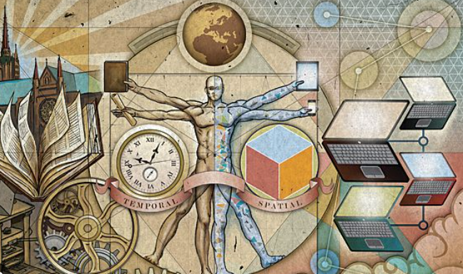

The Revolution Of ScienceThe Scientific Revolution was a period of major advancements in scientific thought, primarily occurring in Europe between the 16th and 17th centuries. It marked a shift from the traditional, Greek-dominated view of nature to a new emphasis on reason, observation, and experimentation. This period saw the development of the scientific method and the establishment of new scientific institutions, profoundly impacting society and paving the way for modern science.
Scientific Revolution
Shift in worldview:
The revolution challenged the long-standing Aristotelian view of the universe and replaced it with the heliocentric model (sun-centered) proposed by Copernicus, further developed by Galileo and Kepler, and ultimately formalized by Newton's laws of motion and gravitation.